Jérémy B.
Architecte SI / Cloud, freelance
+10hpar semaine
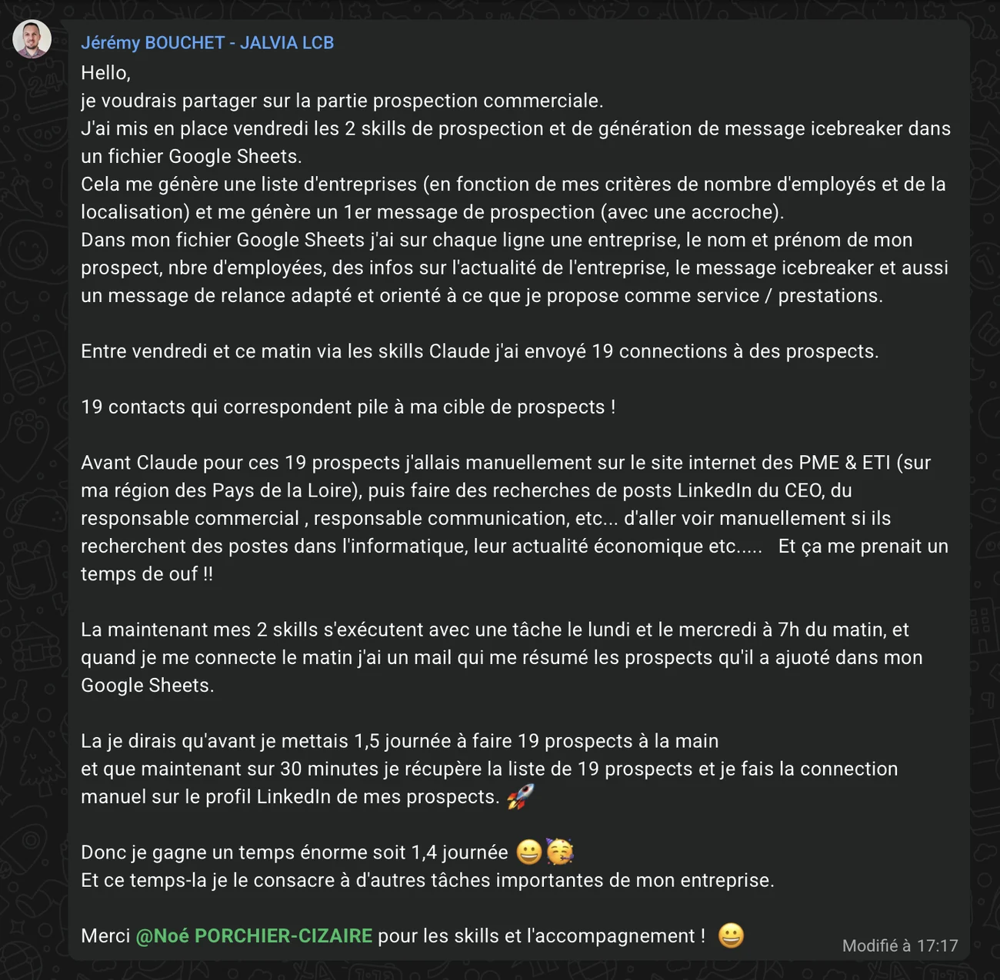
Coaching IA gratuit · en direct
Tu bosses le soir et le week-end, alors que tu paies l'IA pour gagner du temps. Le problème, c'est pas ton organisation : c'est que tu travailles pour l'IA, au lieu que l'IA travaille pour toi. Dimanche soir, je te montre en direct comment construire ton clone IA et récupérer jusqu'à 14 h par semaine.
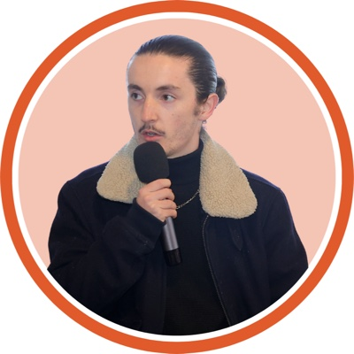
En direct avec Noé Porchier-CizaireFondateur du Cockpit Business, plus de 85 entrepreneurs accompagnés
80 heures par semaine, tous ses week-ends au bureau. Dès le premier mois avec son clone IA, Nathan a récupéré 16 heures par semaine. Il a retrouvé son dimanche, et il va chercher son fils à l'école.
+85 entrepreneurs ont déjà récupéré leurs soirées
C'est noté, à dimanche 20h30.
Ta place est réservée. La confirmation arrive par email : regarde dans les promotions si tu ne la vois pas.
Pas encore envoyé ta question ? Réponds simplement au mail de confirmation.
Dimanche dernier, 18h
Le vrai problème
Tu lui poses une question, tu copies la réponse, tu la corriges, tu la recolles ailleurs. Et le lendemain, tu lui réexpliques tout depuis le début. Tu t'es rajouté du boulot. Ceux qui avancent vite ont arrêté de discuter avec l'IA : ils en ont fait leur clone.
Il connaît ta boîte, tes clients et ta façon de faire. Tu ne réexpliques plus rien.
Il a appris tes tâches : devis, mails, relances, comptes-rendus. Il les fait comme toi.
Il est branché sur tes outils et il travaille à heure fixe. Toi, tu valides.
Témoignages
Elaine L., en trois vidéos
Leurs messages, en entier
Jérémy B.
Architecte SI / Cloud, freelance
+10hpar semaine

Diane L.
Consultante IA et transformation digitale
+7hpar semaine
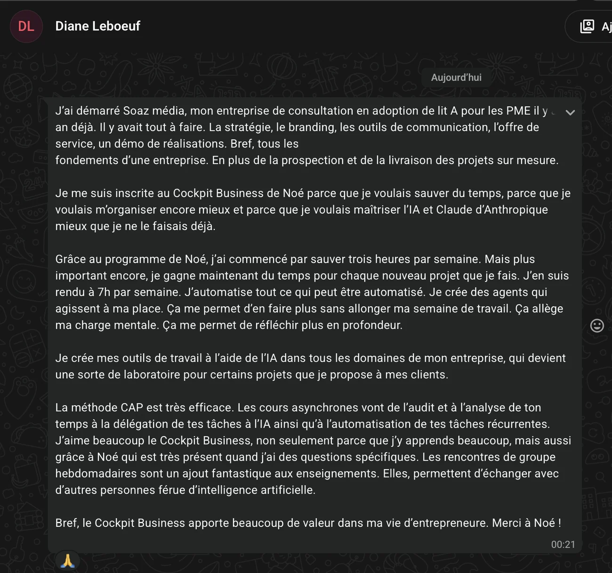
Michel Q.
Conseiller en gestion de patrimoine
+2h30par semaine
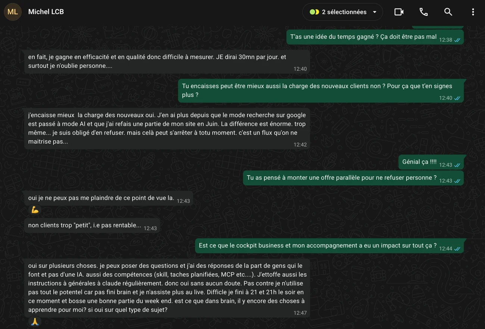
Ce qu'ils en disent, à chaud
Messages reçus pendant le programme.
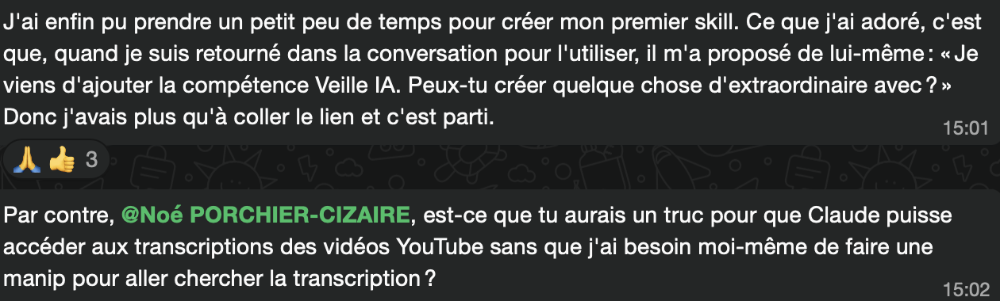
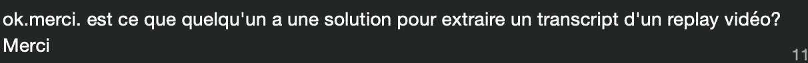
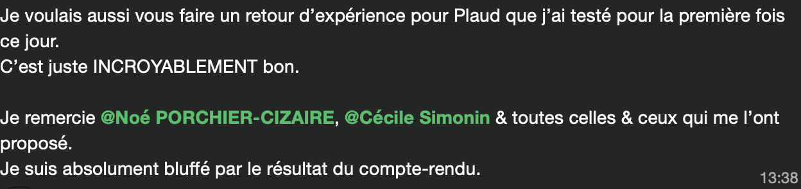
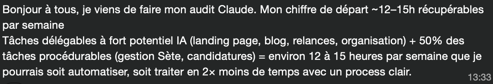
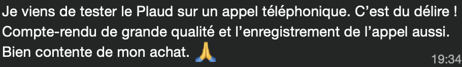
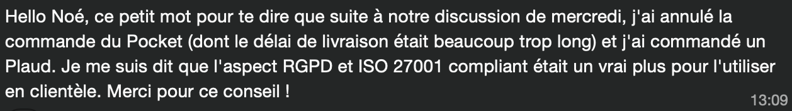
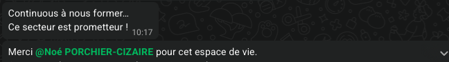
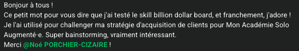
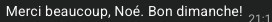
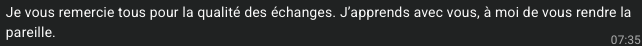
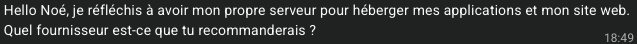
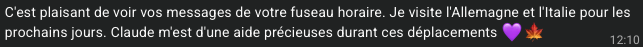
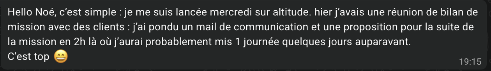
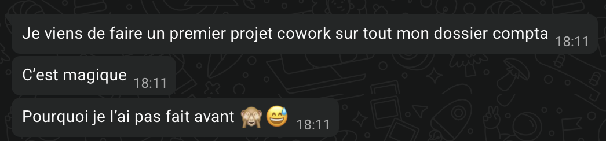
Au programme
Un audit de 5 minutes, à coller dans ton IA dès le début du live.
Je te montre concrètement comment il marche, écran partagé.
Sans filtre, même celles que tu n'as jamais osé poser.
Ce que tu peux lancer dès lundi matin.
Pour qui
Qui anime
J'ai été exactement comme toi : les soirées et les dimanches sur l'ordi. Je dirige PRCZ, une agence de stratégie IA pour PME, et j'ai accompagné plus de 85 entrepreneurs avec la méthode CAP. Dimanche, je te montre ce que j'applique à ma propre activité, et je réponds à tes questions.